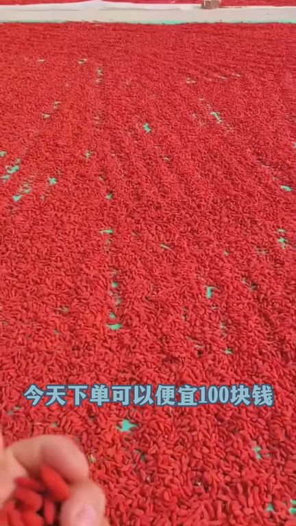
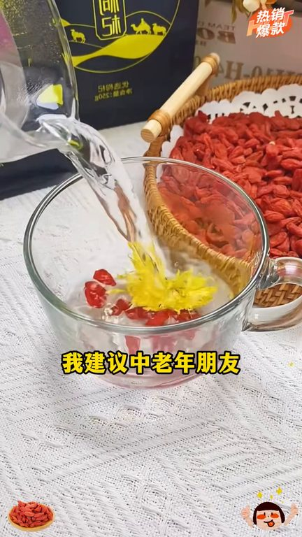
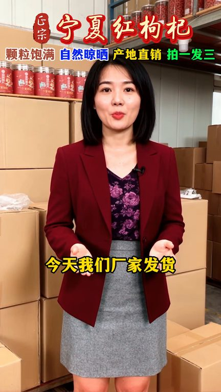

TOP 1 · 代表素材深度拆解
核心放量 强点击
视频为原始素材 HTTPS 链接；点击后加载，建议在网络环境良好时播放。
37.6万素材消耗
6.01%CTR
8.7%类目消耗占比
+1.66pp较类目均值
表现判断
该素材是类目内第 1 名，属于“核心放量”；CTR 高于类目均值。消耗体现承接规模，CTR 体现首屏与定向效率，两项应结合判断，不能仅以单指标下结论。
表达标签
口播三段式证据
开场钩子50岁女子把吊杆枸杞当零食吃结果体检11生都好奇怕平时吃的是啥一定要吃吊杆枸杞你看就是在树上自然风杆自然吊杆没有熏任何的硫黄没有加任何的氧你看这是咱们家第一批的吊杆
中段论证我是真舍不得了今天下单可以便宜100块钱大哥们这下都后悔了吧傻眼了吧就前两天我就说让你们再等等肯定会降价你们都说已经够便宜了都不听我的这回咋样降价了吧你要是下个月再买这个凝下红枸杞那都划不来了你们等了一年的吊杆红枸杞终于可以给你们发货了你看一下就是这样的果子全部都是精选出来的大颗粒的枸杞没有一丁点的硫黄就在树上自然风杆自然吊杆的它吃起来口感比普通的更好吃因为…
结尾转化没有任何染色和旋流枸杞味浓营养高这些都是中老年需要的关键成分每天早上来一杯真的很不错趁着厂家有活动赶紧的家人们我们工厂的活动都上老半天了价格真的太合适了不要你500也不要你300今天我们厂家发货价格就两个字实惠太实惠了您现在点击下方链接还给你包邮送到家
有效点
- CTR 6.01% 高于类目均值 4.35%，开场或人群指向具备点击优势
- 素材已进入类目消耗 Top，核心表达具备继续拆分测试的价值
迭代动作
- 保留当前高效钩子，复制 3 个变量版本：人物、首句和首帧分别单变量测试
- 视频时长偏长，建议剪出 30–45 秒短版，仅保留钩子、两项证据和一次 CTA
- 复核功效、绝对化及价格稀缺措辞；增加适用边界和效果因人而异提示
合规关注
钩子建立 · 5.2s

场景/问题展开 · 39.4s

卖点证据 · 90.6s

转化收口 · 124.8s
查看完整口播摘要
50岁女子把吊杆枸杞当零食吃结果体检11生都好奇怕平时吃的是啥一定要吃吊杆枸杞你看就是在树上自然风杆自然吊杆没有熏任何的硫黄没有加任何的氧你看这是咱们家第一批的吊杆筛选出来的大果枸杞就是在树上自然风杆自然吊杆的很多人都不敢相信没有见过也没有听过你看生后全部都是吊杆的枸杞这个果子家里面三岁以上的孩子都可以把它零食杆直接去吃的口感很香甜我是真舍不得了今天下单可以便宜100块钱大哥们这下都后悔了吧傻眼了吧就前两天我就说让你们再等等肯定会降价你们都说已经够便宜了都不听我的这回咋样降价了吧你要是下个月再买这个凝下红枸杞那都划不来了你们等了一年的吊杆红枸杞终于可以给你们发货了你看一下就是这样的果子全部都是精选出来的大颗粒的枸杞没有一丁点的硫黄就在树上自然风杆自然吊杆的它吃起来口感比普通的更好吃因为它的生长时间比普通枸杞整整多长了90天就是这样的没有任何污染的环境下自然吊杆的而且这个果子你看果子颜色是暗红色的不是鲜红色的你们放心去吃一年只有这一茶凝下红枸杞营养价是非常高如果有条件我建议中老年朋友每天坚持吃枸杞今天我们凝下源头厂家吃宵没有中间商没有套路你买的就是正宗凝下红枸杞给您包邮到家只选用凝下高海拔重质的红枸杞没有任何染色和旋流枸杞味浓营养高这些都是中老年需要的关键成分每天早上来一杯真的很不错趁着厂家有活动赶紧的家人们我们工厂的活动都上老半天了价格真的太合适了不要你500也不要你300今天我们厂家发货价格就两个字实惠太实惠了您现在点击下方链接还给你包邮送到家